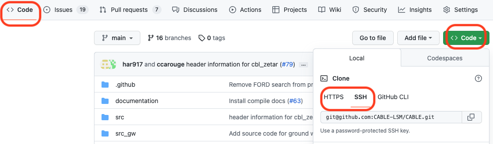
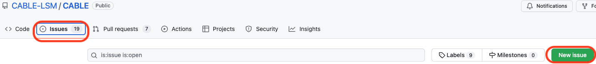
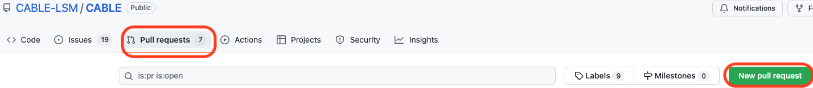
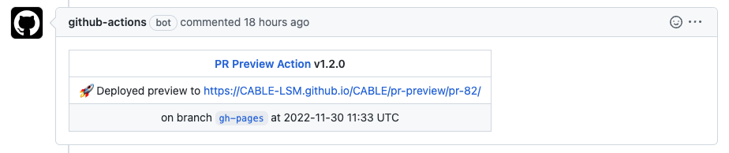
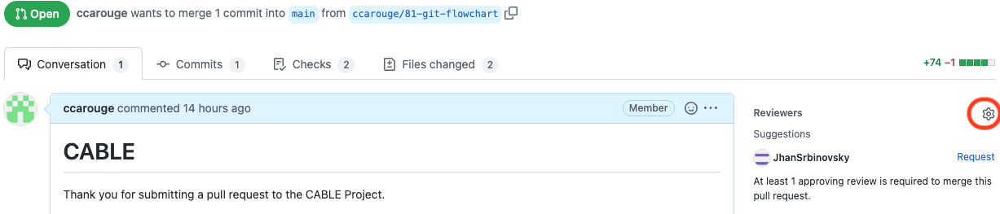

Flowchart to contribute to CABLE's documentation
This workflow assumes you have followed all the steps to setup Git and GitHub given by ACCESS-NRI.
This first flowchart explains what we are trying to do. The following flowcharts go into the details, including the various git commands needed. All the git commands listed are to be run in a terminal on the machine you are working on.
flowchart TD
Idea[Explain your work in an issue]
Workspace[Create a workspace for you in the repository]
Work[Do your work and record it]
Check[Check your work when rendered <br> and merged with the main deployment]
Review[Get a review on your work]
Merge[Merge final version into the main deployment]
FinalUpdate[Update your local copy <br> to be ready for your next piece of work]
Idea --> Workspace --> Work --> Check;
Check -->|Incorrect|Work;
Check -->|Correct|Review;
Review -->|Apply requested changes|Work;
Review -->|Approved|Merge --> FinalUpdate;
linkStyle 3 stroke:red,color:red;
linkStyle 4 stroke:green,color:green;
linkStyle 5 stroke:red,color:red;
linkStyle 6 stroke:green,color:green;
;Legend for the flowcharts
%% Create a graph for the legend of the main graph
flowchart LR
uniq[action done <br> only once ever <br> at the start <br> to get the code locally]:::uniq;
sevterm[action done <br> several times per issue <br> in a terminal/text editor]:::term;
sevgit[action done <br> several times per issue <br> on GitHub]:::github;
onceterm([action done <br> once per issue <br> in a terminal/text editor]):::term;
oncegit([action done <br> once per issue <br> on GitHub]):::github;
question[\question with multiple outcomes/]:::question;
uniq --- sevterm --- sevgit --- question;
uniq --- onceterm --- oncegit --- question;
classDef default fill:#FFFDE7, stroke:#FFF59D;
classDef uniq fill:#D81B60, stroke:#880E4F, color:#FFFFFF;
classDef github fill:#388E3C,stroke:#1B5E20, color:#FFFFFF;
classDef term fill:#F44336, stroke:#B71C1C, color:#FFFFFF;
classDef question fill:#6D4C41, stroke:#3E2723, color:#FFFFFF;
;Setup for new piece of work
flowchart TB
%% Define all the nodes first
clone[Clone repository]:::uniq ;
issue([Open an issue <br> to explain your work]):::github;
locbranch(["Create local branch: <br> git checkout <branchname>"]):::term;
work[Ready to start work];
clone --> issue --> locbranch--> work;
classDef default fill:#FFFDE7, stroke:#FFF59D;
classDef uniq fill:#D81B60,stroke:#880E4F,color:#FFFFFF;
classDef github fill:#388E3C,stroke:#1B5E20,color:#FFFFFF;
classDef term fill:#F44336,stroke:#B71C1C,color:#FFFFFF;
classDef question fill:#6D4C41,stroke:#3E2723,color:#FFFFFF;
click work "https://cable-lsm.github.io/CABLE/developer_guide/contribution_flowchart/#do-and-record-your-work" "Doing work flowchart"
;Clone repository
On CABLE's GitHub main page, click the code green button and copy the URL you need:

Make sure to choose the appropriate protocol (HTTPS or SSH) for connecting to the remote repository. Note, you need to setup an access token to use HTTPS and SSH keys to use SSH.
On your local machine in a terminal, clone the repository:
git clone <URL provided>
Open issue

Before starting new work, open an issue on GitHub to explain what you are planning on working on. This avoid potential duplication of effort.
Create the local branch
You want to create a branch for your work, that's your workspace within the shared repository. For this, in a terminal on your machine, use git checkout with the name of the branch you want:
git checkout <branchname>
Branch name
It is best to start the branch name with the issue number so the link between the two is obvious.
Do and record your work
flowchart TB
edits[Make your edits]:::term;
add["Add your edits to git's index: <br> git add ."]:::term;
commit["Commit your edits: <br> git commit"]:::term;
push[Push your edits <br> git push]:::term;
pr([Create a pull request]):::github;
preview[\Is preview correct?/]:::question;
review[Ready for review];
edits --> add --> commit --> push;
push --> |first time|pr --> preview;
push ----> |subsequent|preview;
preview -->|Yes|review;
preview -->|No|edits;
classDef default fill:#FFFDE7, stroke:#FFF59D;
classDef uniq fill:#D81B60, stroke:#880E4F, color:#FFFFFF;
classDef github fill:#388E3C,stroke:#1B5E20, color:#FFFFFF;
classDef term fill:#F44336, stroke:#B71C1C, color:#FFFFFF;
classDef question fill:#6D4C41, stroke:#3E2723, color:#FFFFFF;
linkStyle 7 stroke:red,color:red;
linkStyle 6 stroke:green,color:darkgreen;
click review "https://cable-lsm.github.io/CABLE/developer_guide/contribution_flowchart/#review" "Review process"
;Commit your edits
You need to record your edits in git, this is called commit. It is recommended to do this regularly as it gives some safety to reverse changes. In Git, this is a 2-step process with a first step to add what you want to commit to the index and then commit what is in the index.
git add .
git commit
Then please add an informative message in the editor that opens automatically. Remember that Git records the date and time as well as the author of the commit, these do not need to be repeated in the message. The message gives information on the nature of the changes.
Push your edits to the remote repository
It is recommended to push your changes back to the remote repository often as it provides a backup of the work, the ability to work from different computers and makes it easier to collaborate on some development:
git push
The first time you push back some work on a branch, consider opening a pull request. This allows potential collaborators or helpers to find your work easily.

You can update the pull request by simply pushing more commits to the same branch.
Check the preview
The pull request will build a preview of your work merged with the main branch of the repository. Please check that your work is rendered correctly. Once a preview is ready, you will see the following comment in the pull request providing the path to the preview:

To preview changes to the API documentation (ie. documentation in the CABLE source code), you need to append /api to the path provided.
Review
All modifications to the documentation no matter how large or small need to be reviewed by another CABLE collaborator.
flowchart TB
%% Define all the nodes first
review[Request review]:::github;
update[Pull updates to your branch to your local repository: <br> git pull]:::term;
merge([Merge branch]):::github;
updatemain([Sync your local repository with the remote: <br> git checkout main <br> git pull]):::term;
edits[Back to editing your branch];
delete([Delete the branch on GitHub]):::github;
%% Define the graphs using the nodes' names
review --> |Need to put code changes|update --> edits;
review -->|Approved|merge;
merge --> delete --> updatemain;
classDef default fill:#FFFDE7, stroke:#FFF59D;
classDef uniq fill:#D81B60, stroke:#880E4F, color:#FFFFFF;
classDef github fill:#388E3C,stroke:#1B5E20, color:#FFFFFF;
classDef term fill:#F44336, stroke:#B71C1C, color:#FFFFFF;
classDef question fill:#6D4C41, stroke:#3E2723, color:#FFFFFF;
linkStyle 0 stroke:red,color:red;
linkStyle 2 stroke:green,color:darkgreen;
linkStyle 1 stroke:red,color:red;
linkStyle 3 stroke:green;
linkStyle 3 stroke:green;
click edits "https://cable-lsm.github.io/CABLE/developer_guide/contribution_flowchart/#do-and-record-your-work" "Doing work flowchart"
;Ask for review

Once you are satisfied with your work, ask for a review. By putting a submission in, you are responsible for being responsive to any comments or edit changes suggested by the reviewer. Remember your work will not be accepted into the main deployment branch until a reviewer approves it.
The reviewer might make code changes suggestions. It is recommended to accept all the suggestions you agree with first and then, work on your local copy for any additional required modifications.
If you need to ask for a second review from the same reviewer, in the reviewer's list, click on the icon for this purpose.
Merge your branch
Once the reviewer(s) has(have) accepted your changes, you can merge your work into the main branch. Feel free to choose the merge method you prefer. "Merging" is the simplest and should be used if you don't understand what the other methods do.
Delete the branch
Once the branch has been merged with main, make sure to delete the branch and start any other piece of work from a different branch. Deleting the branch can be done from GitHub and the pull request screen.
Update your local repository
Finally, don't forget to update your local repository to sync the main branch with the state of the remote repository. For this, you need to checkout main and then pull from the remote repository:
git checkout main
git pull
At this stage, you can also delete your local branch which has become unnecessary:
git branch --delete <branchname>
Created: December 12, 2022